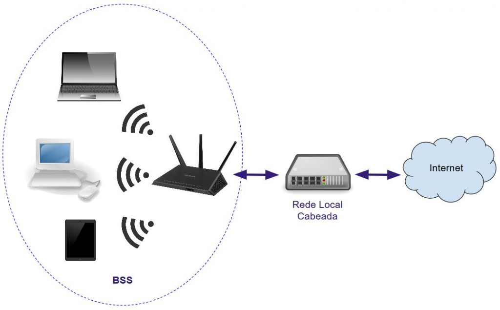

Aprenda Redes
Tudo sobre Redes Wireless Parte 2
O que São Wireless, WLAN, Wi-Fi, WiMAX e WMAN
Provavelmente você já ouviu algumas dessas frases: Vou montar uma rede wireless em meu escritório
, você tem a senha do wi-fi
, aqui temos acesso à internet via WiMAX
, preciso comprar um roteador wireless mais potente
, entro na WLAN, conecto à WMAN e acesso a internet
. Isso são todos termos técnicos do mundo das redes sem fio, alguns tem suas semelhanças.
Basicamente, essas são as peculiaridades deles:
- Wireless: É uma palavra inglesa que significa
sem fio
. Termo genérico utilizado para redes de dados que não usam cabos para comunicação entre os dispositivos, empregando em vez disso, ondas eletromagnéticas. - WLAN: É o mesmo que
LAN sem fio
. Uma rede WLAN se refere a uma rede local (LAN) em uma residência, escritório ou outros locais onde seja necessária uma rede com pequena área de cobertura sem o emprego de cabeamento para conectar as estações. Quando pedimos a senha de um wi-fi, estamos pedindo a senha do WLAN. - Wi-fi: Significa
wireless fidelity
. Se trata de um tipo de rede wireless WLAN para a construção de LANs para comunicação de computadores e dispositivos portáteis, como tablets, notebooks e smartphones, entre outros, à redes como a internet ou outras redes locais, cabeadas ou não. É uma rede de transmissão de alta qualidade (é uma analogia aos sons hi-fi). - WiMAX: Significa
worldwide interoperability for microwave access
(interoperabilidade mundial para acesso de micro-ondas). É um padrão criado por um consórcio de empresas que especifica uma interface para redes de banda larga sem fio em um escopo metropolitano (WMAN). O padrão é 802.16.
Alguns tipos de redes wireless são o bluetooth, wi-fi, rádio (AM/FM), satélite (como GPS), ZigBee, LTE, li-fi, UMTS e WiMAX.
Atualmente, a rede WLAN padrão é a rede baseada nos padrões IEEE 802.11, também chamada de wi-fi. Outros tipos já existiram, como a HiperLAN.

Wi-fi é marca registrada da Wi-Fi Alliance, que restringe o uso da expressão Wi-fi Certified a produtos que passaram em teste de certificação de interoperabilidade. As redes wi-fi são padronizadas como IEEE 802.11, com várias revisões (a, b, g, n, etc.), cada uma com características tecnológicas específicas.
Uma diferença entre o padrão WiMAX e o wi-fi é o raio de alcance de cada rede. O WiMAX foi projetado para uso em redes de área metropolitana sem fio (WMAN), cobrindo em torno de 50 Km de área com sinal. Wi-fi é usado em ambientes privados em áreas restritas, tem alcance máximo de poucas centenas de metros.
As aplicações do WiMAX são: Fornecer conectividade móvel de banda larga em e entre cidades, alternativa sem fios aos serviços de cabo e DSL para acesso banda larga de última milha, fornecer serviços de VoIP e IPTV em conjunto com dados (Triple Play), entre outros.
Analisando seu Ambiente Wi-Fi
Temos várias ferramentas para analisarmos o ambiente wi-fi ao redor.
No Android temos para isso o aplicativo Wi-Fi Analyzer, que permite nós visualizarmos quais redes wi-fi estão próximas, qual está com a onda mais alta, quais canais elas estão e se alguma rede está sobrepondo outra (o que causa interferência na transmissão de dados).
No Windows, em computadores com placa de rede wi-fi, podemos usar o Xirrus para analisar a rede wi-fi, e ele pode ser baixado aqui: https://www.techspot.com/downloads/6901-xirrus-wifi-inspector.html
Caso esteja utilizando o Linux, instale o LinSSID, digitando esses comandos:
sudo add-apt-repository ppa:wseverin/ppa
sudo apt-get update
sudo apt-get install linssid
Quanto mais alta a onda da rede wi-fi, mais forte ela está, e ela não deve estar no mesmo nível de outra, no mesmo canal, pois dá interferência em ambas.
Alguns access points costumam mudar de canal para conseguir uma transmissão melhor e sem interferências. Nessa situação ele desconecta todos os dispositivos e os reconecta ao achar um canal livre.
Os padrões wi-fi são esses:
| Nome do Padrão | Velocidade da Rede |
|---|---|
| 802.11.A | 54 Mbps |
| 802.11.B | 11 Mbps |
| 802.11.G | 54 Mbps |
| 802.11.N | 600 Mbps |
| 802.11.AC | 3,6 Gbps |
| 802.11.AX | 10 Gbps |
Sempre escolha no access point, o melhor padrão para wi-fi, mas o dispositivo também deverá ser compatível com o mesmo padrão, o que pode ter problemas com alguns dispositivos, principalmente os mais antigos, por isso que o padrão em muitos dispositivos é o Mixed, mas ele diminui o desempenho.
Sobre o canal de comunicação, aqui no Brasil tem 13, mas geralmente o melhor é usar o 1, 6 ou 11.
Podemos encontrar dois tipos de padrões para redes Wi-fi: 2,4 Ghz e 5 Ghz, que são duas faixas de frequência usadas pelo wi-fi para transmitir dados. Com essas diferenças:
- 2,4 Ghz: Tem maior alcance e atravessa melhor paredes, porém é mais lenta e sofre mais interferência (de outros aparelhos e redes).
- 5 Ghz: Tem maior velocidade e menos interferência, mas o alcance é menor e o sinal perde força mais rápido com obstáculos.
Resumindo:
- 2,4 Ghz: Mais longe, menor velocidade.
- 5 Ghz: Mais rápido, menor alcance.
Protegendo seu Wi-Fi
No seu navegador, acesse o IP do seu dispositivo wireless (indo em ipconfig, no caso do Windows, e pegando o endereço do gateway padrão), como por exemplo 192.168.15.1.
Na tela de login, acesse usando o login e senha padrões (que é recomendado serem mudados posteriormente). É recomendado também mudar os nomes e senha da rede wi-fi.
Toda rede wi-fi possui um protocolo de segurança, que define sua senha e a criptografa. Prefira os protocolos WPA3 ou WPA2, evite o protocolo WEP, que é mais vulnerável.
Apesar da função WPS ser útil para conectar um dispositivo a rede wi-fi, ele também tem vulnerabilidades, pois facilita o acesso a invasores na rede, e por isso é recomendado desativá-lo.
Já a opção SSID define se mostrará ou não a rede wi-fi para as pessoas, caso ela não seja mostrada teremos que configurar manualmente no dispositivo (mas isso pode ser burlado por um hacker).
Temos também um filtro de MAC na configuração do wi-fi, onde podemos bloquear ou permitir determinados endereços físicos.
Procure também atualizações para o firmware do seu dispositivo wireless.
Para que alguns programas funcionem corretamente, é necessário deixar algumas portas abertas no roteador, no entanto, quando elas não estão em uso, é recomendado fechá-las para não serem exploradas por invasores.
O que é o Mecanismo RTS/CTS
O problema do nó oculto ocorre quando estações em uma BSS estão distantes entre si, e não se enxergam, apesar de enxergarem o AP. Pode ocasionar a tentativa de transmissão simultânea de pacotes, levando a colisões. Impacta negativamente a performance da rede sem fio. Pode ser resolvido com o emprego do mecanismo RTS/CTS.
Sobre o mecanismo RTS/CTS:
- Processo simples que controla o acesso das estações ao meio de transmissão.
- Uma estação anuncia que deseja transmitir dados, e todos na rede são avisados de que devem esperar essa transmissão recorrer, e a estação realiza então sua transmissão de quadros.
- Por padrão, é desabilitado nos equipamentos para evitar overhead.
Operação do RTS/CTS:
- Uma estação com o RTS/CTS habilitado deseja transmitir dados para algum outro host na rede.
- Essa estação envia um quadro RTS ao access point (ou a outra estação diretamente).
- Esse quadro RTS é usado para a distribuição de NAV, notificando todas as outras estações que elas devem esperar até que quadros CTS, de dados e ACK tenham sido transmitidos.
- O AP então envia um quadro CTS, também usado para distribuição de NAV. Se alguma estação não tiver escutado o quadro RTS, escutará o quadro CTS, pois todas as estações são membros do mesmo BSS (Basic Service Set).
- As estações que recebem os quadros RTS ou CTS ajustam seu NAV para o valor fornecido.
- Os dados da estação transmissora são enviados até a estação receptora.
- AP envia quadro ACK para confirmar fim da transmissão e liberar as transmissões novas.
O quadro RTS (20 bytes) contém cinco campos, que são:
- Controle de Quadro: Tipo do quadro, entre outras coisas. 1011 para RTS.
- Duração: Tempo estimado para a transmissão do quadro de dados, inclui tempo para os quadros CTS, ACK e SIFS.
- RA (Receiver Address): Endereço MAC do AP (BSSID).
- TA (Transmitter Address): Endereço MAC do AP (BSSID)
- FCS: Controle de erros.
Já um quadro CTS (14 bytes) possui quatro campos:
- Controle de Quadro: Tipo do quadro, entre outras coisas. 1100 para CTS.
- Duração: Tempo do RTS, menos SIFS e tempo de transmissão do quadro CTS.
- RA (Receiver Address): TA do quadro RTS se torna o RA aqui.
- FCS: Controle de erros.
Existem, basicamente, três modos possíveis de configuração do mecanismo RTS/CTS:
- Desligado (é o padrão).
- Ligado.
- Ligado, com o RTS Threshold (limite).
Threshold: É possível controlar quais pacotes, acima de um certo tamanho determinado por um limite (threshold), são anunciados pelo mecanismo para envio pelas estações.
Esses são os problemas do nó exposto:
- Problema no qual uma estação wireless nas proximidades, porém conectada a um outro access point, escuta a transmissão de quadros RTS e CTS e para de transmitir quadros pelo tempo especificado no RTS (mesmo não fazendo parte da rede em questão).
- Pode ocorrer quando ambas as redes em questão estão usando o mesmo canal de transmissão wireless, causando assim o que chamamos de interferência co-canal (ou interferência de canal).
E tem essas dicas:
- Se uma rede sem fio tem uma performance muito baixa por excesso de usuários conectados, interferência eletromagnética ou colisões de pacotes, diminua o limite RTS até conseguir uma melhora na performance da rede.
- Monitore a rede para verificar se ocorrem colisões. Caso haja muitas colisões, e se os usuários estiverem fisicamente distantes, ative o mecanismo RTS/CTS.
- Se a rede estiver com baixa performance por outro motivo que não o dos nós ocultos, ativar o mecanismo RTS/CTS pode diminuir ainda mais sua performance, pois está sendo adicionada mais uma etapa para a transmissão de dados na LAN.
- Valor recomendado para o RTS Threshold: Cerca de 500. Valores mais baixos significam pacotes RTS transmitidos com mais frequência, útil para melhorar a performance caso ocorram muitas colisões, sobrecarga de tráfego ou interferência eletromagnética.
- Sempre ajuste o RTS em pequenos valores, e teste para ver se obteve o efeito desejado.
O que é WPA e WPA2
Ao configurar uma rede wi-fi, é importante escolher uma boa chave de criptografia para garantir a segurança dos dados. O WPA e WPA2 são os protocolos mais usados para evitar o acesso de cibercriminosos, que podem coletar informações para atividades ilegais ou instalar malwares.
Lançado em 2003, o WPA resolve diversas vulnerabilidades do seu antecessor, o WEP. Esse protocolo é mais seguro porque usa uma chave de 256 bits para criptografia, representando uma grande melhoria com relação às chaves de 64 e 128 bits do padrão anterior.
Outra característica do WPA é o Temporal Key Integrity Protocol (TKIP), responsável por gerar dinamicamente uma nova chave para cada pacote ou unidade de dados, sendo mais seguro que o sistema de chave fixa do WEP. No entanto, esse padrão ainda entrega um baixo nível de segurança.
A Wi-Fi Alliance, organização que estabelece os protocolos de wi-fi, precisou manter alguns elementos do WEP para que dispositivos antigos fossem compatíveis. Por conta disso, o WPA tem brechas que podem ser exploradas com certa facilidade.
Para resolver os problemas, a organização apresentou o protocolo WPA2 em 2004. O novo padrão é mais fácil de configurar e entrega um sistema de segurança mais complexo. A grande diferença está no Advanced Encryption Standard (AES), que substituiu o TKIP.
Essa tecnologia melhorou o nível de segurança ao ponto de ser usada para proteger informações governamentais. Ou seja, o WPA2 fornece uma criptografia forte. No entanto, ele tem uma vulnerabilidade crítica: Se uma pessoa não autorizada conseguir acessar a rede, ela pode atacar outros dispositivos conectados.
O WPA3 foi lançado em 2018 para corrigir as vulnerabilidades das versões anteriores. Ele traz um sistema de criptografia chamado Perfect Forward Secrecy (PFS) e uma série de melhorias, como novos recursos para simplificar a segurança, autenticação mais robusta e maior força criptográfica.
No entanto, esse padrão ainda não foi amplamente adotado. Há roteadores e access points com WPA3 no mercado, mas eles costumam ser mais caros. Além disso, apesar dos fabricantes disponibilizarem a atualização que entrega o novo protocolo, nem todos os modelos vendidos oficialmente têm um hardware capaz de suportá-lo. Em outras palavras, o WPA3 não é uma opção para a maioria das pessoas, pelo menos por enquanto.
Criando uma Rede Única usando WDS
Podemos usar o WDS (Wireless Distribution System) para estender a rede wi-fi usando dois ou mais roteadores wireless (embora o ideal seja usar apenas dois para evitar perda de desempenho).
Conecte o modem (ou o gateway da operadora em modo bridge) ao roteador wireless principal pela porta Internet (WAN). Em seguida, conecte um cabo de uma das portas LAN ao computador para realizar a configuração. Acesse o IP do roteador no navegador (por exemplo, 192.168.0.1), faça login e configure DHCP, nome da rede (SSID), senha, criptografia e demais opções.
Para configurar o segundo roteador wireless como repetidor via WDS:
- Conecte o segundo roteador ao computador via cabo.
- Acesse o IP padrão dele (geralmente algo como
192.168.0.1). - Altere o IP LAN do segundo roteador para a mesma rede do primeiro, mas com final diferente (por exemplo, se o principal é
192.168.0.1, use192.168.0.2). - Desative o servidor DHCP no segundo roteador (isso é essencial para evitar conflito).
- Salve e reinicie o roteador, se necessário.
Depois:
- Acesse novamente o roteador pelo novo IP (ex:
192.168.0.2). - Ative a função WDS nas configurações wireless.
- Procure a rede wi-fi do roteador principal e conecte-se a ela.
- Informe a senha do wi-fi principal e salve.
Após a configuração, o segundo roteador poderá ser desconectado do computador e posicionado em um local onde ainda receba sinal do primeiro.
Hoje em dia, WDS é meio ultrapassado. Se possível, prefira:
- Modo Repetidor/Range Extender (mais simples).
- Access point com cabo (melhor desempenho).
- Sistemas mesh wi-fi (melhor solução moderna).
Usando Repetidor Wi-Fi
Os repetidores podem ser usados para estender uma rede wi-fi, devendo ser posicionados em um local onde ainda haja cerca de 50% a 70% do sinal do roteador ou access point principal.
Veja a imagem de um repetidor wireless:

A porta RJ-45 presente no repetidor é usada para configuração, mas pode usar para conexão, se for o caso.
Primeiramente, ligue o repetidor na tomada. Ele exibirá uma rede wi-fi padrão (algo como Repeater ou o nome da marca). Conecte-se a essa rede e, no navegador, acesse o endereço de configuração (como 192.168.0.1).
Nas configurações do repetidor:
- Procure a opção de modo repetidor (Repeater/Extender).
- Clique para buscar redes wi-fi disponíveis.
- Selecione a rede do seu dispositivo wireless principal.
- Digite a senha do wi-fi.
- Salve as configurações e aguarde o reinício.
Após a configuração, finalize e reposicione o repetidor em um local adequado para ampliar o sinal da rede.
PS: É recomendável usar o mesmo nome de rede (SSID) e senha do roteador/AP principal para facilitar a troca automática entre os sinais.
Diferenças entre Ponto de Acesso e Roteador Wireless
Muitos confundem as definições de ponto de acesso (AP) e roteador wireless, mas eles não são exatamente a mesma coisa. Veja as diferenças entre os dois:
Ponto de Acesso (AP)
O ponto de acesso (access point, ou AP) funciona como uma ponte
entre a rede cabeada e os dispositivos sem fio. Ele permite que dispositivos se conectem à rede via wi-fi, normalmente estando ligado a um switch ou roteador por cabo Ethernet. No AP, configuramos parâmetros como o nome da rede (SSID), senha, tipo de criptografia (WPA2/WPA3), entre outros recursos, como WPS (embora este seja pouco recomendado por questões de segurança).
Veja a imagem de um ponto de acesso:

Roteador Wireless
O roteador wireless tem como função principal, tal como um roteador padrão, interligar redes distintas, como a rede da operadora (WAN) e a rede local (LAN), realizando o roteamento dos dados. Além disso, ele integra em um único equipamento, um ponto de acesso wi-fi e, geralmente, um switch Ethernet (normalmente com 4 portas), permitindo conexões tanto sem fio quanto cabeadas.
Veja a imagem de um roteador wireless:

Em ambientes domésticos, um roteador wireless costuma ser suficiente, pois já reúne todas essas funções em um único dispositivo. Já em redes corporativas, é comum que essas funções sejam distribuídas em equipamentos separados (roteadores, switches e pontos de acesso), o que oferece maior escalabilidade, desempenho e controle da rede.
PS: Alguns equipamentos podem trabalhar tanto com o modo roteador quanto do modo ponto de acesso, ou até mesmo no modo repetidor, disponível nas configurações dos mesmos.
Temos também o gateway, que é um equipamento que integra em um único dispositivo, um modem ou ONT (conexão com a operadora) com um roteador wireless (contendo roteador, switch e ponto de acesso wi-fi), sendo comumente fornecido pelas operadoras.
Ele pode operar em modo bridge, no qual desativa funções como NAT, DHCP e wi-fi, passando a atuar apenas como modem/ONT, permitindo que outro equipamento (como um roteador próprio) faça o roteamento da rede e essas funções citadas anteriormente.
Veja a imagem de um gateway: